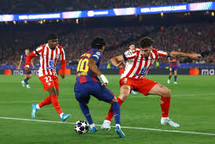

Match analysis: Atlético Madrid vs Barcelona

Barcelona faced Atlético Madrid in an intense battle, with both teams showing strong defensive organisation and quick counter-attacks. Read our full breakdown of the key moments and standout performances.
Read the full match report